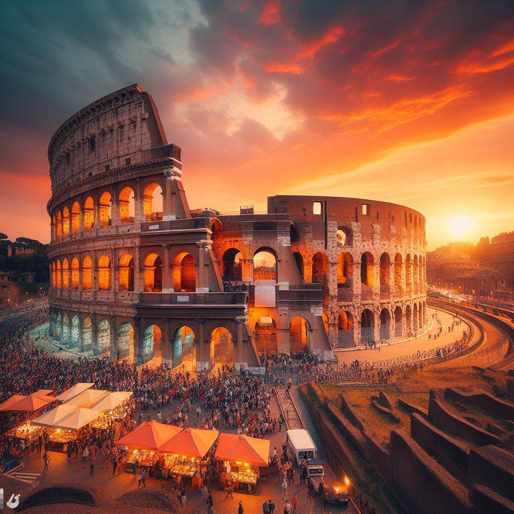

Miért látogassa meg Rómát?
Róma, az olasz főváros, a Tiberis folyó partján
fekszik. A város története több mint 2500 évre nyúlik
vissza. A legenda szerint a várost a rómaiak hadistenének,
Romulus és Remus alapították. A város történelme során számos
fontos eseménynek adott otthont, mint például a Római Birodalom
megalapítása, a reneszánsz korszak, a katolikus egyház központja
és a modern Olaszország fővárosa. Róma nevezetességei közé tartozik
a Colosseum, a Szent Péter-bazilika, a Vatikán, a Trevi-kút és a
Spanyol-lépcső.

Róma
Róma egy időtlen város, ahol az ókori történelem,
művészet és kultúra összefonódik a modern élettel.
A lenyűgöző ókori romok, mint például a Colosseum és
a Forum Romanum, elvarázsolnak, míg a Vatikáni Múzeumokban
található mesterművek és a Sixtus-kápolna misztikus
atmoszférája mély élményt nyújtanak. Róma pezsgő élettel,
ízletes ételekkel és csodálatos panorámákkal várja azokat,
akik szeretnék bejárni ezt az örök várost.
3 napos útiterv
1. nap:
Látogass el a Vatikáni Múzeumokba, amelyeket érdemes
előre online foglalni. A múzeumokban számos műalkotás
és antik tárgy található. A belépőjegy ára 17 euró.
Utána látogass el a Szent Péter-bazilikához, amely a
katolikus egyház központja. A bazilika kupolájára is
fel lehet menni, ahonnan csodálatos kilátás nyílik a
városra. A kupolára való feljutás 5 euróba kerül.
Ezután sétálj át az Angyalvárhoz, majd menj át a Szent
Angyal-hídon. A hídról gyönyörű kilátás nyílik a városra.
Utazz a Piazza San Giovanni-ig, majd látogass el a Lateráni
Szent János-bazilikához. A bazilika ingyenesen látogatható.
Látogass el a Santa Scala-hoz, amelyen Jézus ment fel Pilátus
elé. A lépcsőn való feljutás ingyenes.
2. nap:
Látogass el a Circus Maximus-hoz, majd sétálj el a Palatinus
mellett. A Palatinuson található a Diadalív és a Colosseum is.
Ha szeretnél bemenni a Colosseumba, akkor javasolt előre online
foglalni jegyet. A belépőjegy ára 16 euró.
Utána látogass el a Capitoliumhoz, amely Róma egyik hét dombja
közül az egyik. A Capitoliumon található a város alapítóinak,
Romulus és Remus szobrának másolata.
Ha van még időd, látogass el a Piazza Navona-ra, amelynek közepén
három szökőkút található.
3. nap:
Látogass el a Trevi-kúthoz, amely Róma egyik legismertebb
szökőkútja. A kútba való pénzérmék dobása szerint a városba
való visszatérés biztosított.
Utána látogass el a Pantheonhoz, amely az egyik legjobb állapotban
fennmaradt ókori épület Rómában.
Ha van még időd, látogass el a Villa Borghese-hoz, amely Róma
legnagyobb parkja. A parkban számos múzeum és galéria található.